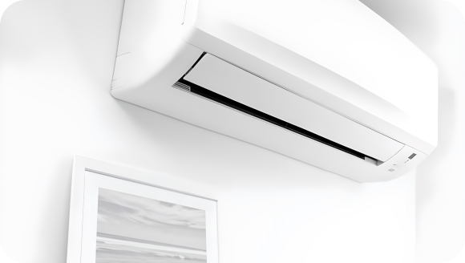

The Benefits of Energy-Efficient Air Conditioning Systems
The Benefits of Energy-Efficient Air Conditioning Systems In today's world, energy efficiency is a top priority for homeowners looking to reduce their carbon footprint and lower utility bills. When it comes to home comfort, investing in an energy-efficient air conditioning system offers numerous benefits beyond just saving money. In this article, we'll explore the advantages of choosing energy-efficient AC units for your home.
-
Cost Savings
One of the most significant benefits of energy-efficient air conditioning systems is the potential for significant cost savings on energy bills. Compared to older, less efficient models, modern energy-efficient units consume less electricity to achieve the same level of cooling, resulting in lower monthly utility expenses
-
Environmental Impact
Energy-efficient AC systems help reduce greenhouse gas emissions and combat climate change by consuming less energy and relying on more eco-friendly refrigerants. By minimizing electricity usage, homeowners can contribute to a healthier planet and reduce their environmental footprint
 -
Enhanced Comfort and Performance
Enhanced Comfort and Performance Energy-efficient air conditioning units are designed to deliver consistent and precise cooling, maintaining optimal comfort levels throughout your home. These systems often feature advanced technologies, such as variable-speed compressors and programmable thermostats, which ensure efficient operation and customizable temperature control
-
Extended Lifespan
Extended Lifespan Due to their high-quality components and advanced engineering, energy-efficient air conditioners tend to have longer lifespans than their less efficient counterparts. With proper maintenance and care, these units can provide reliable cooling for many years, reducing the need for frequent replacements and associated costs
-
Rebates and Incentives
Rebates and Incentives Many government agencies, utility companies, and manufacturers offer incentives and rebates for homeowners who purchase energy-efficient HVAC systems. These incentives can help offset the initial cost of upgrading to a more efficient air conditioner, making it a financially attractive investment
As the temperature rises, your home's air conditioner becomes an essential asset for keeping your indoor environment cool and comfortable. However, to ensure that AC unit operates efficiently and lasts for years to come, regular maintenance is key. In this article, we'll discuss five essential tips for maintaining your home air conditioner.